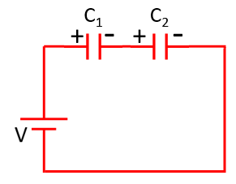

HOME BLOG EBOOKS ABOUT CONTACT SHOP
Like with resistors, capacitors can also be connected in series or parallel combination and to analyze such circuits, we can find equivalent capacitance for these combinations.
When a set of capacitors are connected in parallel, the total equivalent capacitance is the sum of individual capacitances.
Suppose two capacitors, having capacitances C1 and C2 farads are connected in parallel across a potential difference of V volts. Let the charge on C1 be Q1 coulombs and that on C2 be Q2 coulombs. Therefore,
If we were to replace the capacitors by a single equivalent capacitor C, then a charge Q= Q1 + Q2 would be produced by the same potential difference.
This result can be extended to any no. of capacitors connected in parallel. For ‘n’ capacitors in parallel,
For a series combination of capacitors, the reciprocal of the equivalent capacitance is the sum of the reciprocals of the individual capacitances.

Suppose two capacitors, having capacitances C1 and C2 farads are connected in series across a potential difference of V volts. Let the voltages across C1 and C2 be Q1 and Q2 respectively. Since it’s a series connection, the current and hence the charge flowing through the capacitors will be the same.
Now if we were to replace the 2 capacitors with an equivalent capacitor of capacitance C, then it would have the same charge Q, when connected across the voltage V. Also from KVL, we know that V= V1 + V2. Therefore,
For ‘n’ capacitors in series,
Note that the expression for capacitors in series and resistors in parallel are the same and similarly the expression for capacitors in parallel and resistors in series are also the same.